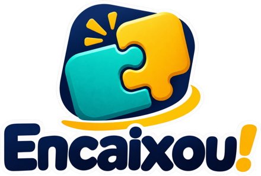

Suporte do Encaixou!
Quebra-cabeças de 24 a 1000 peças para iPhone, iPad e Android.
Precisa de ajuda ou quer mandar uma sugestão?
Escreva para contato@mcconsultoriati.com.br. Conte qual é o aparelho e o que aconteceu; respondemos em até 3 dias úteis.
Comprei um pacote e ele não apareceu
Abra o menu do jogo e toque em Restaurar compras. As compras ficam ligadas à sua conta da App Store ou do Google Play, então também voltam em um aparelho novo, desde que você use a mesma conta.
Como peço reembolso?
As compras são processadas pela App Store e pelo Google Play, e o reembolso é pedido diretamente a eles: em reportaproblem.apple.com (Apple) ou no histórico de pedidos da sua conta do Google Play.
Como tiro os anúncios?
Qualquer compra de pacote remove os anúncios entre as partidas. Os anúncios nunca aparecem durante a montagem.
Meu progresso fica salvo?
Sim. O jogo salva sozinho enquanto você monta, e as partidas em andamento aparecem em Meus jogos. O progresso fica guardado apenas no aparelho: se o aplicativo for desinstalado, as partidas em andamento são apagadas.
Como vejo todas as peças?
Toda partida começa com as peças espalhadas na mesa. Use dois dedos para aproximar e afastar. O botão Recolher guarda as peças soltas na bandeja lateral, onde dá para filtrar as bordas e ordenar por cor; Espalhar devolve as peças à mesa.